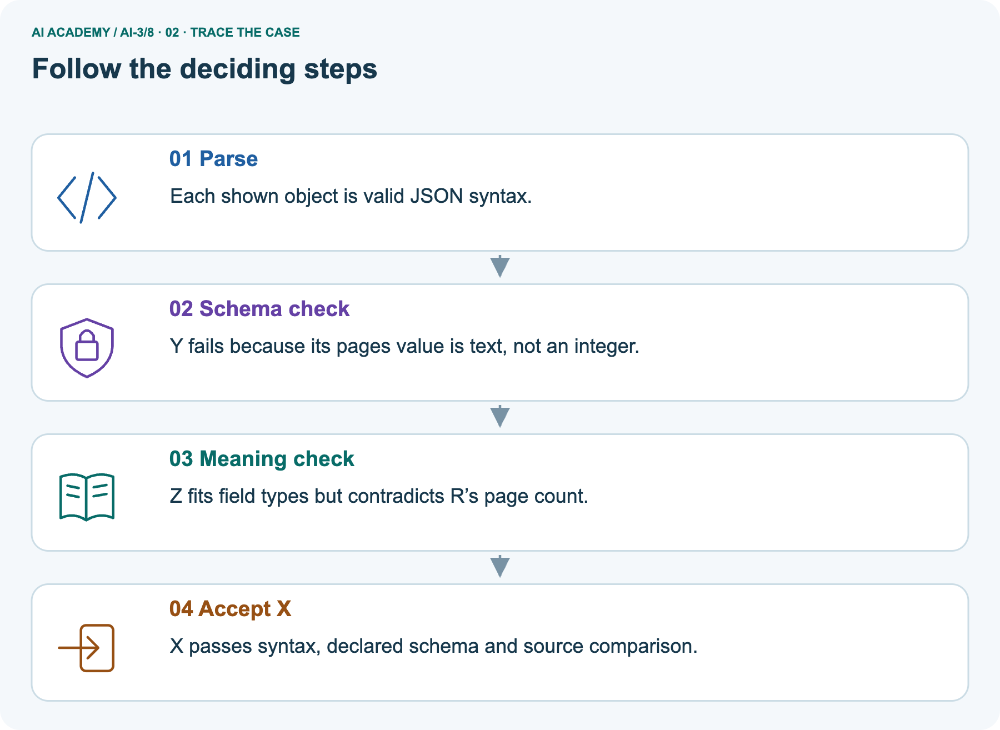
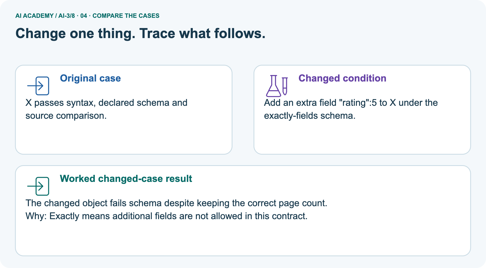
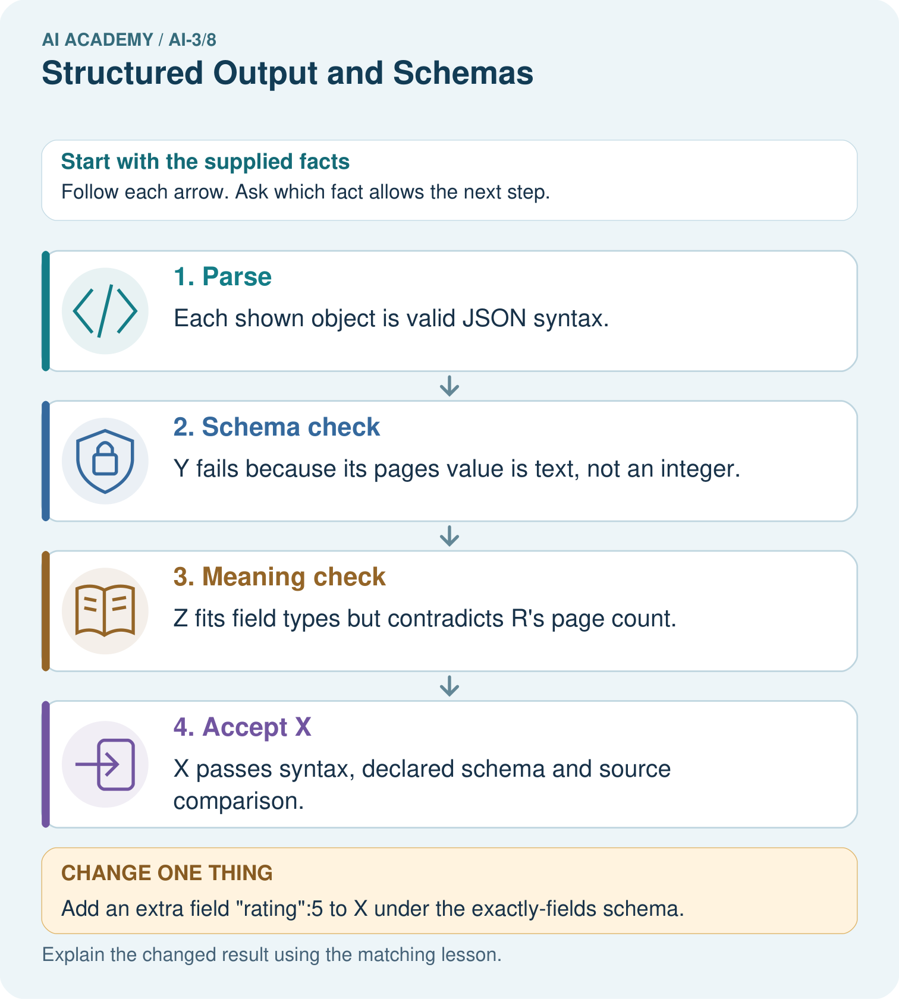
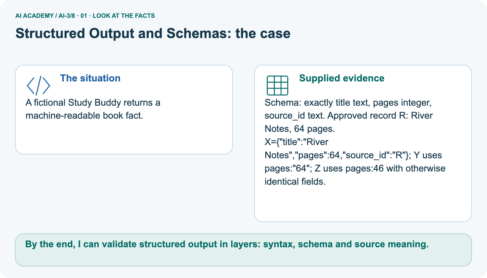
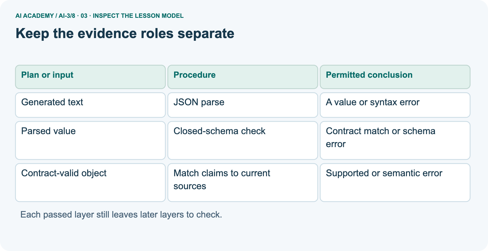
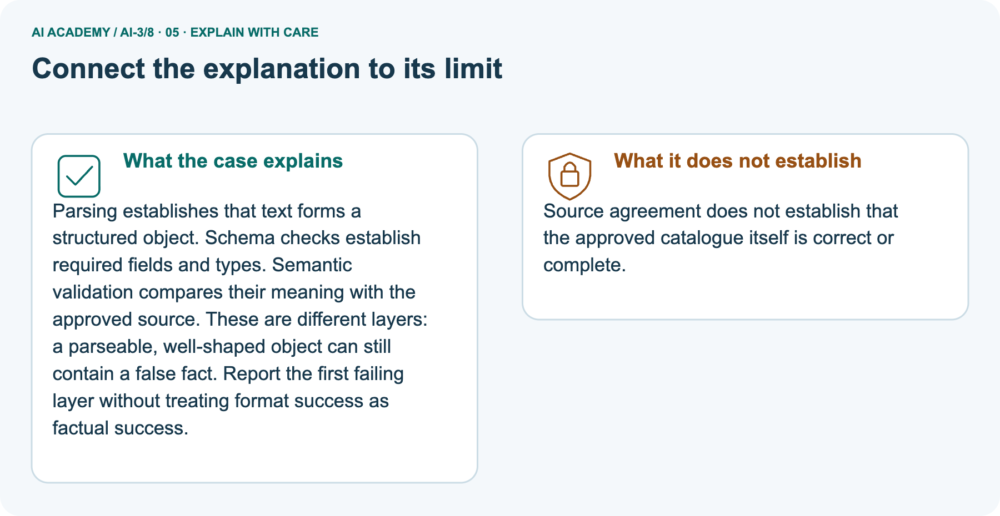
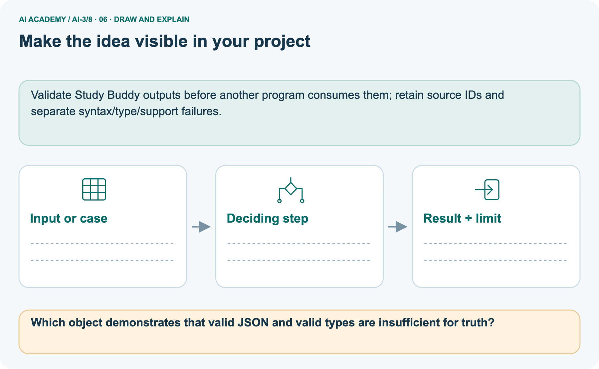

AI Academy · Level 3 · Grade 8 · Week 8 · Student lesson
Structured Output and Schemas
Learn to understand, design, build, test and explain AI systems responsibly.
Project: Verified Study Buddy
THE CONNECTED WEEK
Parse the text. Check the contract. Verify the claim.
Validate complete structured outputs with distinct syntax, schema and source-support evidence.
Keep one habit: Three layers → full room candidates → separate book schema → paper/local audit → independent objects.
Main lesson · Section 1
At which layer does this answer first fail?
Separate JSON syntax, a closed schema and support from current sources.
Your learning goals
I can separate JSON parsing, schema validation and source support checks.
I can reject invalid types and unexpected fields under a closed schema.
I can trace a validly formatted but unsupported claim.
Recall requested format versus checked output
Close your notes first. A rough first answer helps us choose the right starting point; it is not a score for your ability.
Does a requested output format prove a response followed the specification?
Your end goal
By the end, I can validate structured output in layers: syntax, schema and source meaning.
Earlier wording, alternatives and picture transcripts
Your learning target
Remember before reading
Without opening the old lesson, explain one key idea from Iterative Prompting. Give an example and a mistake that the idea helps you avoid.
Without opening the old lesson, explain one key idea from Prompt as a Contract. Give an example and a mistake that the idea helps you avoid.
Without opening the old lesson, explain one key idea from A Distribution of Possibilities. Give an example and a mistake that the idea helps you avoid.
After trying, check the relevant lesson or ask your teacher. Change the part of your explanation that the evidence shows was wrong.
Week 8: Structured Output and Schemas
Schemas make output easier to validate, reuse, and test.

CREATOR MISSION
Request fields, then check missing and invalid values.
Creator name and date:
Readiness for the connected explanation
This week’s end goal
Main lesson · Section 2
Parse the structure, then validate its contract and meaning
Each layer answers a different question.
The three validation layers
A response may be valid JSON and still violate the schema or sources. First parse the text. Then check the exact object fields and types. Finally check source support and domain meaning.
These checks answer different questions. Do not call a successful parser a complete validator.
The complete room-report field and type contract
Use the Week5 room-report contract: exactly status,room,capacity,source_ids. status is supported or needs_review. source_ids is a list of distinct known source-ID strings. For supported, room is a nonempty string and capacity a nonnegative integer. For needs_review, room and capacity are null. Boolean values are not capacities under this contract.
Earlier wording, alternatives and picture transcripts
PICTURE STORY
Notice → Predict → Explain
Begin with visible evidence. Do not explain more than the picture and information support.
MYSTERY
The learners must use structured output and schemas to solve a problem. What information do they have? What decision or calculation do they make? What would count as evidence that it worked?
Three observations (what you can point to):
My prediction and the clue supporting it:
A closer explanation
Main lesson · Section 3
Diagnose fragments without mistaking them for complete objects
The investigation supplies full candidates for actual checking.
Read the illustrative layer failures
| Response fragment | Layer that rejects it | Reason |
|---|---|---|
| {status: supported} | Syntax | JSON keys/strings need quotes |
| {"capacity":"12"} | Schema in a complete object | String does not satisfy integer capacity |
| {"capacity":true} | Schema in a complete object | Boolean is not accepted as an integer |
| An extra booking field | Closed schema | Unexpected field |
Distinguish missing fields, nulls and unauthorised conversions
These fragments illustrate failures, not complete candidate objects. A real check receives the whole object and verifies every required field.
Do not repair a string capacity automatically unless a separate documented conversion policy permits it; otherwise report validation failure. A null value differs from missing a field.
Trace the three-layer pipeline
Keep the evidence roles separate
Explain the deciding step
Point to the input, the deciding step and the result in this week’s visual. Explain the same step in ordinary words. A picture helps when you can say what each part represents.
Earlier wording, alternatives and picture transcripts
VISUAL MECHANISM
Input → Process → Output
Trace the information. At each stage, ask what changed and how you could test it.

↓

↓

Which stage could fail even when the other two are correct? Explain:
A closer explanation
Connect the picture and the explanation
Main lesson · Section 4
Compare grammatical structure with supported meaning
A source ID and correct type do not establish the fact.
Four pictures with a purpose

Normal case: predict the result and deciding evidence.

Boundary case: identify the exact limit.

Missing information: name what must be clarified.

Transfer case: explain which procedure still applies.
Choose a revealing case
Which case is most likely to reveal a hidden assumption? Why?
Predict the supplied changed case
Change: Add an extra field "rating":5 to X under the exactly-fields schema.
Check after predicting
Prediction: The changed object fails schema despite keeping the correct page count.
Reason: Exactly means additional fields are not allowed in this contract.
Earlier wording, alternatives and picture transcripts
CASE GALLERY
Four Tests, Four Kinds of Evidence
A system is not understood until it survives more than one comfortable example.
NORMAL CASE: predict and name evidence. BOUNDARY CASE: predict and name evidence.
MISSING INFORMATION: predict and name evidence. TRANSFER CASE: predict and name evidence.
Change one thing in the pictured case
Main lesson · Section 6
Audit a room claim, then a separate book-fact schema
The room object has four fields; the pictured book object has three.
Read the complete unsupported room-capacity example
Suppose sources P and Q approve room B and give capacity 12.
The complete object {"status":"supported","room":"B","capacity":99,"source_ids":["P","Q"]} parses and satisfies the stated field types, but its capacity is unsupported by Q. Reject it at semantic validation.
Listing a real source ID does not prove that source supports the associated claim.
Check conditional nulls and source-ID scope
An object with needs_review and room B violates the conditional schema rule even if its source IDs are real. An object with supported, room B and capacity 12 but source ID Z fails the known-source rule.
Require the linked current approval and capacity records to support the same room.
Start the separate River Notes schema and candidates
A fictional Study Buddy returns a machine-readable book fact.
Schema: exactly title text, pages integer, source_id text. Approved record R: River Notes, 64 pages.
X={"title":"River Notes","pages":64,"source_id":"R"}; Y uses pages:"64"; Z uses pages:46 with otherwise identical fields.
Trace syntax, type and source comparison



Read the picture one step at a time
Parsing establishes that text forms a structured object. Schema checks establish required fields and types. Semantic validation compares their meaning with the approved source.
These are different layers: a parseable, well-shaped object can still contain a false fact. Report the first failing layer without treating format success as factual success.
Predict adding an unexpected rating field
Change one thing: Add an extra field "rating":5 to X under the exactly-fields schema. Predict the result before checking the explanation. What remains the same?
Check after predicting



Keep source agreement separate from world truth
Source agreement does not establish that the approved catalogue itself is correct or complete.
Read the labelled picture: Which object demonstrates that valid JSON and valid types are insufficient for truth?
Earlier wording, alternatives and picture transcripts
WORKED EVIDENCE
Reason Step by Step
Predict first. Then check each step. A correct answer without visible reasoning is incomplete evidence.

1. Schema fields: answer=text; evidence=list; confidence=low/medium/high.
2. Output omits evidence: validation fails.
3. Confidence=97 is the wrong type and allowed-value set.
4. Reject, repair, or request again before downstream use.
Recalculate, retrace, or restate the reasoning in your own representation:
CHECK Did the evidence answer the exact question? Did the total, path, or source record stay consistent?
A closer explanation
Learn from the worked case
Cover the result before checking it. Say what is given, choose the procedure, and follow one step at a time. Then uncover the result and explain your first mismatch. Ask why a step is allowed, not only what number it produces.
A pictorial worked case: Structured Output and Schemas
The facts we will use



Why this result follows
What this example does not establish
Main lesson · Section 7
Find a false fact hidden by a valid type
State the first failing layer and the evidence for that decision.
Repair the parse-and-type argument
Claim to repair: The object parses and its capacity is an integer, so the answer is verified. The source may report a different value. In the room example99 has the correct type but Q supports12; in the separate book picture46 is an integer but R supports64. Preserve the exact source identity and claim comparison after the type check.
Design a revealing candidate change
Earlier wording, alternatives and picture transcripts
ERROR DETECTIVE
Compare → Diagnose → Repair
Do not patch the answer. Find the earliest unsupported assumption, wrong step, or weak evidence.

| Evidence record | Expected | Actual | Likely cause / next test |
|---|---|---|---|
| normal case | works | ||
| boundary case | stated rule | ||
| missing input | safe response | ||
| fresh transfer | generalizes |
Repair one cause. Why is this repair better than changing several things?
A closer explanation
Keep validation outcomes and the original generated text for fictional debugging data.
Report the first failing layer and enough detail to locate the issue; later validation should not be reported as passed when it was never reached. Even a fully valid reporting object does not authorise a booking.
The application retains the read-only permission boundary.
Main lesson · Section 8
Practise a supported zero without treating it as missing
Schema acceptance and source agreement remain different checks.
Read the complete D/8 practice and proposed zero
Supported object {"status":"supported","room":"D","capacity":8,"source_ids":["P","Q"]} matches approval P for D and register Q for D capacity 8. It passes all three layers.
Replacing capacity with 0 still passes schema because zero is nonnegative, but fails source consistency unless Q actually reports zero. Preserve measured zero rather than treating it as missing.
Explain all layers before discussion
Complete main W2
Practise with less help: Audit types and fields
Use workbook W2 for the connected example “Structured outputs and validation”. First fill the input and rule boxes. Try the middle steps before asking for a hint. After a hint, try the next step yourself.
| Plan | Do | Check |
|---|---|---|
| What is given? Which rule or procedure applies? | Record each intermediate step. | Does the result follow? What remains unknown? |
Repair valid JSON means correct answer
Use the worked case for Structured outputs and validation. Proposed explanation: “Valid JSON means correct answer”. Decide whether this explanation is supported.
Point to the step or supplied fact that decides; explain your repair if needed.
Answer on your own before discussion. If you are unsure, say which step you need help with.
Check your reasoning
Explain the separate book picture
Which object demonstrates that valid JSON and valid types are insufficient for truth?
Explain the picture
Keep independent work separate
This is supported practice. Keep the separately named independent case for an attempt before feedback.
Earlier wording, alternatives and picture transcripts
LOGIC STUDIO
Specify Before You Run
Prompts, schemas, retrieval, tool calls, and code are inspectable parts of one AI product.

SET task, audience, constraints, output_schema LOAD approved_context or retrieval_result CALL model or allowed_tool VALIDATE fields, claims, citations, and safety IF evidence missing: ask, retrieve, or abstain RETURN useful output + source trail + limitations
Trace one input. Which line changes the state or chooses a path?
A closer explanation
Explain your trace to a partner. Your partner points to one step to check. Swap roles on the next case. Each person writes their own explanation.
Main lesson · Section 9
Validate six complete output strings
Use the paper cards first; local Python is optional.
The complete source bundle and response contract
Complete trusted fictional source bundle for the shared investigation: P is a current approval naming room B; Q is a current capacity register naming room B with capacity12. These are the only known source IDs. The response contract is exactly status,room,capacity,source_ids as in the main lesson. All six candidates below are complete strings; do not silently fill missing fields or convert values.
Six supplied candidates
| Card | Complete candidate text |
|---|---|
| 1 | {"status":"supported","room":"B","capacity":12,"source_ids":["P","Q"]} |
| 2 | {status:"supported","room":"B","capacity":12,"source_ids":["P","Q"]} |
| 3 | {"status":"supported","room":"B","capacity":"12","source_ids":["P","Q"]} |
| 4 | {"status":"supported","room":"B","capacity":true,"source_ids":["P","Q"]} |
| 5 | {"status":"supported","room":"B","capacity":12,"source_ids":["P","Q"],"book":true} |
| 6 | {"status":"supported","room":"B","capacity":99,"source_ids":["P","Q"]} |
Predict, diagnose and retain the first failure
Predict the first failing layer for cards1–6 using the trusted P/Q bundle, then compare with a partner or run the optional complete local program. Keep the original text, parser result, schema reason and exact source comparison. Card1 passes; card2 has unquoted status; cards3and4 have invalid capacity types; card5 adds a forbidden field; card6 has an unsupported value.
Add missing capacity, unknown source Z and supported capacity0 as distinct changes. A schema-valid zero must still match a supplied source; do not treat it as absent. The program implements this classroom contract, not every JSON Schema feature or a complete production service. It never books a room. Reserve the independent F/G objects before feedback.
Optional Python · Complete layered validator
import json
class DuplicateField(ValueError): pass
def unique_object(pairs):
result={}
for key,value in pairs:
if key in result:
raise DuplicateField('duplicate field')
result[key]=value
return result
def reject_constant(value):
raise ValueError('not a JSON number')
def validate(text,sources):
# Source records are supplied trusted classroom fixtures, not scraped inputs.
try:
obj=json.loads(text,object_pairs_hook=unique_object,parse_constant=reject_constant)
except DuplicateField:
return 'schema: duplicate field policy'
except (json.JSONDecodeError,ValueError):
return 'syntax'
fields={'status','room','capacity','source_ids'}
if type(obj) is not dict or set(obj)!=fields:
return 'schema: exact fields required'
if obj['status'] not in ('supported','needs_review'):
return 'schema: status'
ids=obj['source_ids']
if type(ids) is not list or not all(type(s) is str for s in ids):
return 'schema: source IDs'
if len(ids)!=len(set(ids)) or any(s not in sources for s in ids):
return 'schema: unknown or repeated source ID'
if obj['status']=='supported':
if type(obj['room']) is not str or not obj['room']:
return 'schema: room'
if type(obj['capacity']) is not int or obj['capacity']<0:
return 'schema: capacity'
elif obj['room'] is not None or obj['capacity'] is not None:
return 'schema: review claims must be null'
approvals={s['room'] for s in sources.values() if s['kind']=='approval' and s['current']}
expected=None
if len(approvals)==1:
room=next(iter(approvals))
capacities={s['capacity'] for s in sources.values()
if s['kind']=='capacity' and s['current'] and s['room']==room}
if len(capacities)==1:
expected=(room,next(iter(capacities)))
if obj['status']=='needs_review':
return 'accepted' if expected is None else 'semantic: complete support available'
if expected is None or (obj['room'],obj['capacity'])!=expected:
return 'semantic: unsupported claims'
cited=[sources[s] for s in ids]
approval=any(s['kind']=='approval' and s['current'] and s['room']==obj['room'] for s in cited)
capacity=any(s['kind']=='capacity' and s['current'] and s['room']==obj['room']
and s['capacity']==obj['capacity'] for s in cited)
return 'accepted' if approval and capacity else 'semantic: cited support incomplete'
sources={'P':dict(kind='approval',current=True,room='B'),
'Q':dict(kind='capacity',current=True,room='B',capacity=12)}
cards=['{"status":"supported","room":"B","capacity":12,"source_ids":["P","Q"]}', '{status:"supported","room":"B","capacity":12,"source_ids":["P","Q"]}', '{"status":"supported","room":"B","capacity":"12","source_ids":["P","Q"]}', '{"status":"supported","room":"B","capacity":true,"source_ids":["P","Q"]}', '{"status":"supported","room":"B","capacity":12,"source_ids":["P","Q"],"book":true}', '{"status":"supported","room":"B","capacity":99,"source_ids":["P","Q"]}']
for number,text in enumerate(cards,1):
print(number,validate(text,sources))Optional-program details: JSON true/null become Python True/None, so exact type checks exclude Boolean capacities. The parser explicitly rejects non-JSON NaN/Infinity constants. Repeated object names are rejected by this classroom’s duplicate-field schema policy; do not claim all JSON grammars prohibit them. Source records are trusted fixtures with stated kind/current/room/capacity fields.
Semantic checks use the whole supplied source bundle, then require cited current approval and capacity to support the same room. Missing/conflicting support permits a null needs_review report; complete support does not justify that fallback under this contract.
Keep the evidence record
| Test / input | Prediction | Actual | Evidence / calculation | Change or keep? |
|---|---|---|---|---|
| normal | ||||
| boundary | ||||
| missing | ||||
| fresh transfer |
What did the hardest test teach you that the normal test did not?
Before trying: what do I expect, and why? While trying: which step could first go wrong? Afterwards: what did I actually observe, and what should change? Keep “not run” if you only traced the procedure.
Earlier wording, alternatives and picture transcripts
EVIDENCE LAB
Predict → Test → Record → Explain
Keep expected and actual results separate. Surprises are useful data when recorded honestly.

Use the six complete candidate strings and trusted P/Q source bundle. Predict syntax, schema and semantic outcomes independently; retain each first failure. The complete local validator is optional and enforces only the declared classroom contract; no external action is performed.
Plan → try → check
Main lesson · Section 14
Try alone: validate the fresh F/G objects
Separate parser success, type checks and exact source support.
Independent objects and encoding assumptions
Sources A approve room F and B register F capacity 9. Object X has supported,F,9,[A,B] with exactly the required fields. Y replaces 9 with "9". Z keeps integer 9 but names room G.
Trace the first failing layer for each and explain the difference.
Treat the independent X/Y/Z descriptions as properly encoded JSON objects with exactly status,room,capacity,source_ids; the shorthand is a description, not literal JSON. Source A is the current approval for F and B the current register for F capacity9. Apply exact integer capacity and nonempty room rules before matching source support. Do not change G to F or text9 to integer9 silently.
Your first attempt and help record
Attempt this case before feedback. Record any help. Earlier examples below are further practice; a case already practised with feedback cannot establish fresh transfer.
Your teacher has the independent answer and scoring criteria. Complete the matching workbook week to keep your practice evidence together.
Use feedback afterwards
Attempt the independent case before hints. Record whether you worked alone, used a hint or followed a model. After feedback, fix the first unsupported step and explain why it changed.
A later check uses a changed case, not a copied answer.
Earlier wording, alternatives and picture transcripts
Independent case: Validate new objects independently
Week 8 Independent application
Close the worked explanation. Apply the idea to this different question without copying.
A required schema has title as text and count as an integer. The output is {"title":"Seeds","count":"three"}. Identify the error and give a valid replacement.
My answer, with a trace, calculation or supporting evidence
Create and test
Change one relevant detail. Predict the result before testing. Include a boundary or missing-information case when it helps reveal a limit.
My changed input and expected result
Connect to your project
Require answer, source snippet, citation, uncertainty, and next-question fields.
The evidence I will keep
Transfer practice from the original programme
Schema requires title:text and pages:number. Output is {"title":"Cloud","pages":"80"}. Fix its structural error. Would the repaired object prove the book really has 80 pages?
Use feedback to improve
Main lesson · Section 11
Validate the project’s actual contract before reuse
Do not substitute the room or book schema for the study buddy’s chosen fields.
This week’s concrete contribution
Define the Verified Study Buddy’s own exact fields, types, allowed statuses, source-ID rules and missing-evidence combinations before another component consumes its output. Parse, validate schema and compare every factual claim with approved passages as separate steps. A rule allowing an integer cannot establish its factual value; a valid response cannot grant a tool permission.
Keep failed text and a clear reason for each rejected layer.
Validate Study Buddy outputs before another program consumes them; retain source IDs and separate syntax/type/support failures.
Keep the checkpoint and human choice
THIS WEEK’S CHECKPOINT Require answer, source snippet, citation, uncertainty, and next-question fields.
SYSTEM MAP Learner need → prompt/schema → approved sources/retrieval → model/tool → structured answer → verification → human decision
What will you add, change, or verify in the project this week?
What should remain under human control?
RESPONSIBLE DESIGN Collect only necessary information. Show uncertainty and limits. Never confuse fluent output with verified truth.
Earlier wording, alternatives and picture transcripts
CUMULATIVE PROJECT
Verified Study Buddy
Every week adds one inspectable piece. The system must show how it reached a result.

Evidence for your project
Main lesson · Section 16
Finish: identify the layer and evidence for the decision
A well-shaped answer can still be unsupported.
Explain without notes
Close your notes. Explain this goal in your own words: Separate JSON parsing, schema validation and source support checks
Plan a changed-case return
If you are unsure, return to the worked picture and explain one arrow. If you are ready, change an input or assumption and justify your prediction.
Save your workbook evidence. At the next review, try a different case before opening your old answer.
Reference bank and extra practice
Choose the reference that helps your next step.
Your quick word guide
Reference · Section 5
Your quick word guide
Use the words to explain a particular step, record or limit.
Core vocabulary
| Word | My own example | Not this / boundary |
|---|---|---|
| schema | A specification of required fields, types and structural rules for data. | |
| field | A named item of information in a record or structured message. | |
| type | The category of a value, such as text, number or Boolean. | |
| validation | Checking data or behaviour against rules; in ML, validation data is used to choose settings or models, separately from final testing. |
Terms for the connected explanation
| Word | Meaning |
|---|---|
| Syntax validation | Checking whether text can be parsed under the format grammar |
| Schema validation | Checking fields, types and allowed combinations in a parsed value |
| Semantic validation | Checking meaning and consistency with sources or domain rules |
| Closed schema | A contract rejecting fields beyond the stated set |
Earlier wording, alternatives and picture transcripts
VOCABULARY LAB
Words You Can Use to Reason
A definition matters when you can recognize the idea, use it, and contrast it with a near-miss.


Words used in the closer explanation
Choose a stronger thinking challenge
Reference · Section 10
Choose a stronger thinking challenge
Choose the next useful challenge rather than treating the whole ladder as compulsory.
Pick your next step
1 • NAME: Define the concept without repeating the textbook.
2 • TRACE: Show the information, state, branch, calculation, or evidence path.
3 • APPLY: Solve a different example independently.
4 • CHALLENGE: Find a boundary case, counterexample, or unfair outcome.
5 • EXPLAIN LIMITS: Say when the result should not be trusted or used alone.
My strongest evidence of independent understanding:
Earlier wording, alternatives and picture transcripts
MASTERY
From Knowing the Word to Owning the Idea
Move upward only when you can produce evidence without copying the worked example.

Reference: check your explanation
Reference · Section 12
Reference: check your explanation
Use after practice. Validate new objects independently is the selected independent case.
Check the evidence and its limit
1. My fresh example, trace, calculation, or design:
2. My evidence that it works (include a boundary or missing-data case):
3. One limitation, fairness concern, or situation needing human review:
Self-check and record
SELF-CHECK □ I explained the mechanism □ I used evidence □ I tested a fresh case □ I named a limitation □ I can answer ‘why?’
Earlier wording, alternatives and picture transcripts
INDEPENDENT MASTERY PROOF
Checklist for explaining this week’s idea
Use after practice. Validate new objects independently is the selected independent case.

EXPLANATION CHECK Require separate syntax, closed-schema and current source-support checks; preserve the first failing layer.
Extra practice: Type correctness is not factual correctness
Reference · Section 13
Extra practice: Type correctness is not factual correctness
Try the question before opening its worked explanation.
Read the supplied case and question
Schema requires title text and pages number. Output is {"title":"River","pages":"80"}.
Diagnose the shape error.
Your explanation
Which detail supports the answer, and why does it matter?
Check after trying
Pages is a string, not a number. Use numeric 80. Structure validation does not verify the real page count.
| Evidence or stage | Value or result |
|---|---|
| Wrong type | pages = "80" is text |
| Correct type | pages = 80 is numeric |
| Remaining check | Verify the real page count |
Earlier wording, alternatives and picture transcripts
Week 8 Worked case
Use the supplied details to practise the weekly concept before attempting the independent question. This case extends the illustrated lesson.
The situation
The question
Worked explanation
Explain it in your own words
Trace the supplied case visually
Type correctness is not factual correctness
Schema requires title text and pages number. Output is {"title":"River","pages":"80"}.
Diagnose the shape error.
Pages is a string, not a number. Use numeric 80. Structure validation does not verify the real page count.
Reference: original lesson checklist
Reference · Section 15
Reference: original lesson checklist
Use an additional checklist when it helps inspect your explanation.
Targets and evidence
| By the end, I can | How I will show it |
|---|---|
| Separate JSON parsing, schema validation and source support checks | Explain the deciding step, show a trace or test, and state one limit. |
| Reject invalid types and unexpected fields under a closed schema | Explain the deciding step, show a trace or test, and state one limit. |
| Trace a validly formatted but unsupported claim | Explain the deciding step, show a trace or test, and state one limit. |
Keep your route and first prediction
Remember → watch and explain → try with help → investigate → try independently → keep project evidence. Your teacher may spread this lesson across several classes.
Keep your first prediction. Compare it with what the evidence shows and explain any change.
Earlier wording, alternatives and picture transcripts
Start with this question: A fictional Study Buddy returns a machine-readable book fact.
Extra practice: pictures, repair and feedback
Reference · Section 17
Extra practice: pictures, repair and feedback
Attempt each question before opening its explanation. Use one browser or paper copy.
First supported question
A fictional Study Buddy returns a machine-readable book fact.
Which labelled step matches this detail? X passes syntax, declared schema and source comparison.
1. Meaning check
2. Accept X
3. Schema check
4. Parse
Hint if needed: Read the steps in the pictorial case. Match the supplied detail to the stage that performs or records it.
Practice 1: explain the deciding evidence
Check the first explanation
After your attempt, compare with the supported explanation: Accept X X passes syntax, declared schema and source comparison. Parsing establishes that text forms a structured object.
Schema checks establish required fields and types. Semantic validation compares their meaning with the approved source. These are different layers: a parseable, well-shaped object can still contain a false fact.
Report the first failing layer without treating format success as factual success.
Changed-case question
Changed-case practice: Add an extra field "rating":5 to X under the exactly-fields schema. Which conclusion is supported by the supplied facts?
1. This one example guarantees correct results for every future input.
2. The changed object fails schema despite keeping the correct page count.
3. We can decide the result without examining the changed input or the procedure.
Hint if needed: Use the changed condition and the deciding step in the pictorial trace. The answer must say what follows from those facts.
Practice 2: explain the deciding evidence
Check the changed case
After your attempt, compare with the supported explanation: The changed object fails schema despite keeping the correct page count. Exactly means additional fields are not allowed in this contract.
Repair and save your work
Review Iterative Prompting (ai-3/7). Goal: Explain the mechanism and terminology of controlled prompt experiments. Short practice: What evidence supports improvement here, and what remains unproven?.
Return to this week and explain what you changed.
Review Prompt as a Contract (ai-3/5). Goal: Write a prompt specification with observable response criteria. Short practice: Why should the tool not fill melting from memory even if it knows a common definition?.
Return to this week and explain what you changed.
Review A Distribution of Possibilities (ai-3/2). Goal: Check whether a next-token table is a valid probability distribution. Short practice: Why is 0.625 not a broken probability sum?.
Return to this week and explain what you changed.
Use Download completed work in the hosted lesson to export your answers, reflections, practice feedback and code-run evidence. Open the HTML copy to read or print it.
Drafts stay in this browser when storage is available; clear drafts on a shared device.
Earlier wording, alternatives and picture transcripts
Use this supported practice once, in the browser or on paper. Keep the reserved independent assessment for a separate first attempt before teacher feedback.
Repair a missing building block
Keep your completed work
Reference: the six-picture journey
Reference · Section 18
Reference: the six-picture journey
Revisit the picture that serves the current question; key diagrams already sit beside the main explanation.
01. Structured Output and Schemas: the case



A fictional Study Buddy returns a machine-readable book fact. Supplied facts: Schema: exactly title text, pages integer, source_id text. Approved record R: River Notes, 64 pages.
X={"title":"River Notes","pages":64,"source_id":"R"}; Y uses pages:"64"; Z uses pages:46 with otherwise identical fields.
Point to the given fact that matters most. Explain why it matters.
02. Follow the deciding steps
Parse: Each shown object is valid JSON syntax. → Schema check: Y fails because its pages value is text, not an integer. → Meaning check: Z fits field types but contradicts R’s page count. → Accept X: X passes syntax, declared schema and source comparison.
Point to each numbered stage and explain which recorded input it uses.
03. Keep the evidence roles separate



Keep the evidence roles separate. Generated text | JSON parse | A value or syntax error. Parsed value | Closed-schema check | Contract match or schema error.
Contract-valid object | Match claims to current sources | Supported or semantic error
Read the labels and values. Explain the relationship the model shows.
04. Change one thing. Trace what follows.
Original case: X passes syntax, declared schema and source comparison. Changed condition: Add an extra field "rating":5 to X under the exactly-fields schema.
Expected result: The changed object fails schema despite keeping the correct page count. Reason: Exactly means additional fields are not allowed in this contract.
Predict before checking the worked changed-case result. Name what changed and what the supplied facts allow you to conclude.
05. Connect the explanation to its limit



Parsing establishes that text forms a structured object. Schema checks establish required fields and types. Semantic validation compares their meaning with the approved source.
These are different layers: a parseable, well-shaped object can still contain a false fact. Report the first failing layer without treating format success as factual success.
Limit: Source agreement does not establish that the approved catalogue itself is correct or complete.
Explain the case, then point to a limit on the claim.
06. Make the idea visible in your project



Validate Study Buddy outputs before another program consumes them; retain source IDs and separate syntax/type/support failures. Draw your input, deciding step, result and limit.
Supported question: Which object demonstrates that valid JSON and valid types are insufficient for truth?
Draw your project trace and justify the deciding step using evidence.